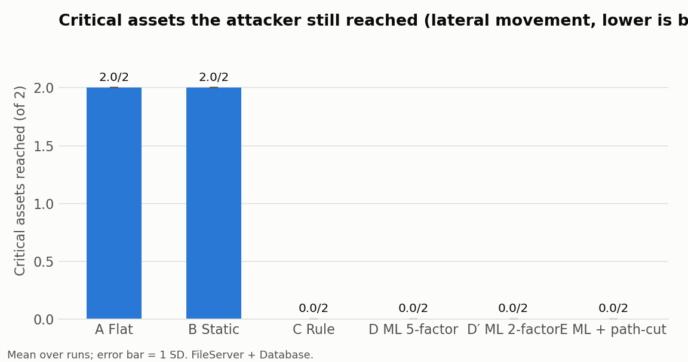
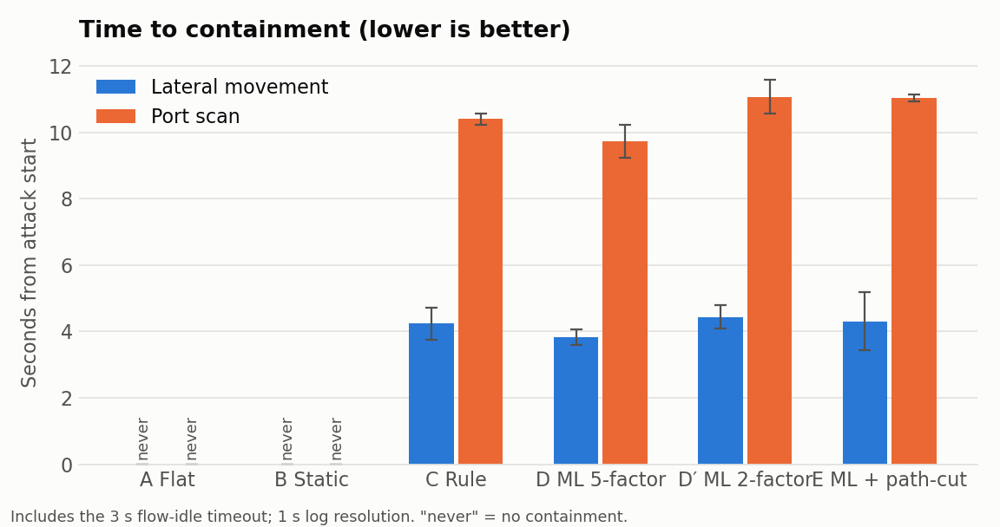
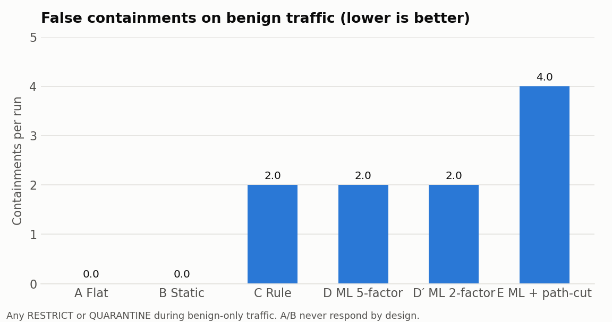

Each panel replays the decisions the controller actually logged during that configuration's run, in recorded order and timing. Final reachability comes from live ping checks at the end of the run. Nothing on this page is simulated.
| Configuration | Runs | Hosts reached (of 7) | Critical reached (of 2) | Contained | Time to contain (s) | Collateral hosts | Legit traffic kept | Label errors / logged flows (per run) | Attacker max risk | Others max risk |
|---|---|---|---|---|---|---|---|---|---|---|
| A — Flat network | 3 | 7.0 | 2.0 | 0/3 | never | 0 | 3/3 | 24.0 of 52.0 (46%) | 0.825 | 0.550 |
| B — Static segmentation | 3 | 6.0 | 2.0 | 0/3 | never | 0 | 3/3 | 64.0 of 132.3 (48%) | 0.825 | 0.550 |
| C — Rule-based adaptive | 3 | 0.0 | 0.0 | 3/3 | 4.2 ± 0.5 | 0 | 3/3 | 2.0 of 9.0 (22%) | 0.825 | 0.450 |
| D — ML adaptive (5-factor) | 3 | 0.0 | 0.0 | 3/3 | 3.8 ± 0.2 | 0 | 3/3 | 2.0 of 9.0 (22%) | 0.852 | 0.517 |
| D′ — ML adaptive (2-factor) | 3 | 0.0 | 0.0 | 3/3 | 4.4 ± 0.4 | 0 | 3/3 | 2.0 of 9.3 (21%) | 0.825 | 0.550 |
| E — ML 5-factor + graph path cutting | 3 | 0.0 | 0.0 | 3/3 | 4.3 ± 0.9 | 0 | 3/3 | 2.0 of 9.0 (22%) | 0.852 | 0.517 |
| Configuration | Runs | Target blocked | Attacker keeps FileServer access | Attacker keeps non-critical access (HR) | Time to contain (s) | Collateral hosts | Legit traffic kept | Label errors / logged flows (per run) | Attacker max risk | Others max risk |
|---|---|---|---|---|---|---|---|---|---|---|
| A — Flat network | 3 | 0/3 | 3/3 | — | never | 0 | 3/3 | 1.0 of 2.0 (50%) | 0.675 | 0.450 |
| B — Static segmentation | 3 | 0/3 | 3/3 | — | never | 0 | 3/3 | 1.0 of 2.0 (50%) | 0.675 | 0.450 |
| C — Rule-based adaptive | 3 | 3/3 | 3/3 | — | 10.4 ± 0.2 | 0 | 3/3 | 1.7 of 4.7 (36%) | 0.675 | 0.517 |
| D — ML adaptive (5-factor) | 3 | 3/3 | 3/3 | — | 9.7 ± 0.5 | 0 | 3/3 | 1.0 of 4.0 (25%) | 0.829 | 0.516 |
| D′ — ML adaptive (2-factor) | 3 | 3/3 | 3/3 | — | 11.1 ± 0.5 | 0 | 3/3 | 1.0 of 4.0 (25%) | 0.675 | 0.450 |
| E — ML 5-factor + graph path cutting | 3 | 3/3 | 0/3 | 3/3 | 11.0 ± 0.1 | 0 | 3/3 | 1.0 of 7.0 (14%) | 0.823 | 0.516 |
| Configuration | Runs | False containments / run | False quarantines (total) | Benign pairs working (of 6) | Label errors / logged flows (per run) | Max risk seen |
|---|---|---|---|---|---|---|
| A — Flat network | 3 | 0.0 ± 0.0 | 0 | 6.0 | 2.0 of 36.0 (6%) | 0.275 |
| B — Static segmentation | 3 | 0.0 ± 0.0 | 0 | 6.0 | 2.0 of 36.0 (6%) | 0.275 |
| C — Rule-based adaptive | 3 | 2.0 ± 0.0 | 6 | 2.0 | 10.0 of 24.3 (41%) | 0.825 |
| D — ML adaptive (5-factor) | 3 | 2.0 ± 0.0 | 0 | 4.0 | 2.7 of 28.3 (9%) | 0.635 |
| D′ — ML adaptive (2-factor) | 3 | 2.0 ± 0.0 | 6 | 2.0 | 2.7 of 24.7 (11%) | 0.825 |
| E — ML 5-factor + graph path cutting | 3 | 4.0 ± 0.0 | 0 | 4.0 | 2.3 of 30.7 (8%) | 0.635 |


